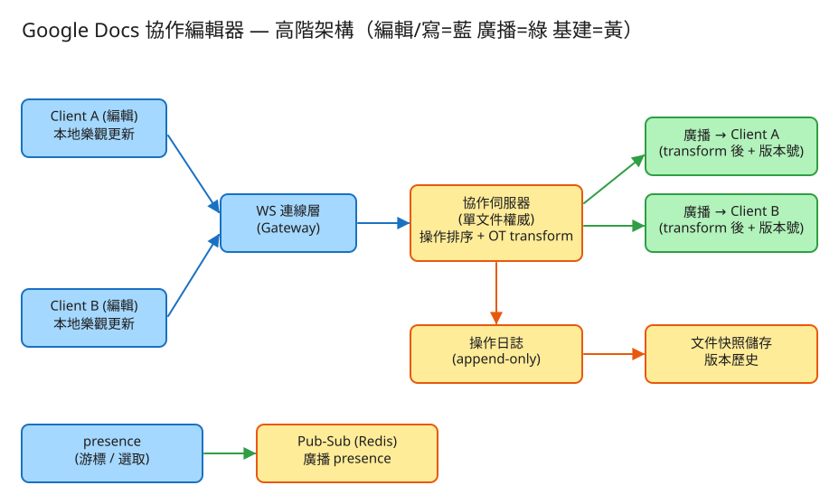

⑨ Google Docs 協作編輯 · 初學者友善版
B 即時連線/同步
看故事就懂
輕鬆讀 25 分鐘
🧠 這份怎麼讀？
這份用「大腦比較好吸收」的方式重寫：先講生活比喻 → 把系統拆成小關卡 → 邊讀邊考自己。
分成兩部分：Part 1 概念（這系統在幹嘛）、Part 2 工程細節（怎麼真的蓋出來，一樣白話）。
遇到 💭 停一下 就先自己想 3 秒再往下看——這叫「提取練習」，比一直往下滑記得更牢。
1. 60 秒搞懂它在幹嘛
想像你和三個朋友同時對著同一張共用白板寫字。你在左邊寫，朋友在右邊塗，另一個人正好把中間一行擦掉。
神奇的是：不管大家手多快、誰先誰後，最後每個人看到的白板，內容都一模一樣，誰也沒被蓋掉。
Google Docs 做的就是這件事——只是那塊「白板」是一份文件，而且參與的人可能在地球的另一端。
🔑 一句話
協作編輯 = 一群人同時在同一張白板寫字，要即時同步、又不能蓋掉彼此，而且最後大家看到的內容要完全一樣。
存檔、開檔這種「一個人改」的部分其實很簡單。面試真正考的，是上面這句裡最難的四個字：「不能打架」。
2. 為什麼「多人同時改」這麼難？
單人編輯一點都不難——你打一個字，存起來，就這樣。難的是「同時」。我們用一個超日常的場景就懂了：
🚌 插隊的座位號會跑掉
一排座位編號 1、2、3、4、5……。你想「在第 5 個座位後面塞一張椅子」。
但就在同一秒，旁邊的人已經「在第 2 個座位前面塞了一張椅子」——於是後面所有座位的號碼都往後推了一格！
你原本說的「第 5 個」，現在其實是第 6 個了。如果你還照舊塞在「第 5 個」，就會插錯位置。
文件就是一排「座位」（每個字一個位置）。當兩個人同時動手，彼此的「第幾個字」會因為對方的插入/刪除而整個位移。
如果系統傻傻照原本的數字套用，兩邊文件就會長得不一樣——這叫「發散」，是這題的頭號大敵。
🧮 看一個真實例子
文件現在是 Hello。同一瞬間：
A 想「在開頭（位置 0）插一個 X」→ 期待 XHello
B 想「在結尾（位置 5）插一個 !」→ 期待 Hello!
伺服器先處理 A，文件變 XHello（長度多 1）。接著處理 B 的「位置 5」——
但因為 A 在前面塞了字，「位置 5」現在指到 XHell|o 的中間，! 會插錯地方！
💭 停一下：那 B 的「位置 5」應該被改成幾，! 才會正確地跑到結尾？
看答案
應該改成 位置 6。因為 A 在 B 的位置前面插了 1 個字，B 的位置要跟著 +1（就像插隊後座位號全部 +1）。
這樣 ! 才會插在 XHello 的結尾，得到 XHello!。而 A 那邊算出來也是 XHello!——兩邊一致了。
這個「幫操作把位置修正一下」的動作，就是這題的主角：OT（操作轉換）。
3. 把系統拆成 4 個關卡
別被「即時協作」嚇到。整件事其實就是闖 4 關，一關一關來：
1把每次編輯，變成一個「操作」
系統不會傳整份文件來來回回（太大、太慢）。它只傳「你剛剛做了什麼」這個小動作，叫一個操作（operation）。
📮 比喻：傳便利貼，不傳整本書
你不會每改一個字就把整本書影印一份寄給大家。你只寫張便利貼：「在第 5 個字後面，加一個 X」。
操作就是這張便利貼，小小一張、傳得飛快。
操作其實只有兩種：插入（在位置 p 加某些字）和刪除（從位置 p 刪掉幾個字）。文件的任何變化，都是這兩種的組合。
2先在自己畫面上「立刻顯示」（樂觀更新）
你打一個字，螢幕要馬上出現，不能等它先飛去伺服器繞一圈再回來——那會卡頓得讓人想砸鍵盤。
✍️ 比喻：先寫上去，再寄出去
你寫白板時，是手一動字就出現在你眼前，同時這個動作才「寄」給其他人。不會手懸在空中等別人點頭才落筆。
系統也一樣：本地先即時顯示，背景再把操作同步出去。這叫「樂觀更新」——先假設不會出事，出事再修。
為了能即時雙向傳操作，這題用一條一直開著的水管（WebSocket 長連線），而不是每次都重新撥號。下面名詞表會再解釋。
3送到伺服器，排隊 + 轉換座標（OT 登場）
所有人的操作都送到同一個「裁判」（負責這份文件的伺服器）。裁判做兩件事：
- 排隊編號：給每個操作一個權威的順序（第 42 號、第 43 號……），大家以這個順序為準。
- 轉換座標（OT）：如果你的操作是「基於舊版本」算的（送出時別人已經先改了），裁判就幫你把位置修正一下，再套用——就是前面「座位號 +1」那招。
🧑⚖️ 比喻：裁判統一裁定順序
就像球賽要有裁判決定「誰先誰後」。大家各說各話會亂，但只要有一個裁判排出唯一的順序、並順手修正每個動作的座標，
所有人照這個結果走，最後白板就會長一樣。
4廣播給所有人 → 大家收斂成同一份
裁判處理完，把「修正過、編好號」的操作廣播給正在看這份文件的每個人。大家套用後——
🎯 比喻：殊途同歸
不管操作到達每個人的順序是 A 先還是 B 先，只要都經過裁判的轉換，最後算出來的白板內容都一樣。
這個「不管路怎麼走、終點都相同」的性質，就叫收斂（convergence）——這題的最高目標。
✅ 四關一句話
① 把編輯變成小操作 → ② 本地先即時顯示 → ③ 送裁判排序 + 轉換座標(OT) → ④ 廣播，大家收斂成同一份。就這樣。
4. 設計時最怕的 3 件事
工程上的「取捨」聽起來很抽象。換個方式記：這個系統最怕三件事，每個設計都是為了避開某個「怕」。
😱 怕「大家看到的不一樣」（發散）
這是最致命的。如果你的白板寫 XHello!、朋友的寫 XHell!o，協作就完全失敗了。
所以「收斂」是不可退讓的硬底線——可以慢一點到、可以暫時不一致，但最後一定要長一樣，這就是 OT 存在的全部理由。
😱 怕「卡頓」
打字若要等伺服器來回才顯示，體驗會爛到沒人想用。所以本地一定先即時顯示（樂觀更新），
代價是：萬一你的操作和別人撞到，本地得在收到裁判結果時偷偷把自己的字重新對齊一次。順暢 > 立刻百分百正確。
😱 怕「弄丟你打的字」
你辛苦打的段落絕不能憑空消失。所以裁判每確認一個操作，就先把它寫進「流水帳」存起來，才回覆你「收到」。
這樣就算伺服器當機，換一台機器把流水帳重播一遍，一個字都不會少。已確認的操作，永不遺失。
5. 一張圖看懂

✏️ 用 Excalidraw 開啟編輯（diagram.excalidraw）
白話導讀：
- 🧑💻 A 和 B 各自打字，畫面本地立刻顯示（樂觀更新）→
- 🔌 操作沿著一直開著的水管（WebSocket）送出 →
- 🧑⚖️ 同一份文件交給同一個裁判伺服器：先排順序，再對落後的操作轉換座標（OT）→
- 📒 確認的操作寫進流水帳（操作日誌），定期整理成快照（存檔點）→
- 📢 裁判把修正過的操作廣播回 A 和 B → 兩邊收斂成同一份 →
- 👀 至於「看得到對方游標在哪」這種小事，走另一條輕鬆的水管，掉了也沒關係。
6. 名詞白話翻譯
看完上面，這些詞你其實都已經懂了，這裡只是把「工程術語 ↔ 白話」對起來，Part 2 會用到：
| 工程術語 | 白話解釋 |
|---|
| 操作 (operation) | 一張便利貼：「在位置 p 插入/刪除某些字」 |
| OT（操作轉換） | 幫慢一步的操作「修正座標」（像插隊後座位號 +1），讓大家算出一樣的結果 |
| 收斂 (convergence) | 不管操作到達順序如何，最後每個人的文件長得完全一樣 |
| 發散 | 收斂的反面：大家看到的內容不一樣（系統最怕的事） |
| 樂觀更新 | 本地先即時顯示，背景再去同步；先假設不出事，出事再修 |
| CRDT | 另一種解法：給每個字一個永不重複的隱形編號，靠編號天然排序合併 |
| WebSocket | 「一直開著的水管」：雙方可隨時互傳訊息，不用每次重新撥號 |
| presence（在場狀態） | 對方的游標位置、選取範圍、誰在線上——掉了也無妨的次要資訊 |
| 版本號 | 文件的「第幾版」流水編號，裁判用它判斷你的操作基於哪一版 |
| 操作日誌 (log) | 把每個確認的操作依序記下來的「流水帳」，是文件的真相來源 |
| 快照 (snapshot) | 每隔一陣子把文件目前內容存一份的「存檔點」，省得每次從頭重播 |
| API | 系統之間講好的「點餐單」格式：你給我什麼、我回你什麼 |
🛠️ Part 2 ｜ 工程細節（一樣白話）
概念懂了，來看「真的要動手蓋，得想清楚哪些事」。一樣用比喻，不用怕。
7. 系統之間怎麼溝通？（API）
🍔 比喻：點餐單
API 就是兩個系統之間講好的「點餐單格式」：你要點什麼（給我哪些欄位）、我回你什麼。
講好格式，雙方就能合作，不用知道對方怎麼運作。
這題的溝通分兩種，剛好對應前面的「先開檔，再即時編輯」：
① 開檔 / 存檔（用一般的 HTTP，偶爾才一次）
POST /docs → 建一份新文件，回 { 文件編號, 版本=0 }
GET /docs/{編號} → 載入目前內容，回 { 內容, 版本=42 }
這種「開一次檔」的動作不頻繁，用普通的 HTTP（撥號→拿資料→掛斷）就夠。
② 即時協作（走 WebSocket 那條「一直開著的水管」）
你送出操作（要附上「我是基於第幾版算的」）：
{ 動作:"插入", 位置:5, 文字:"X", 基準版本:42 }
裁判排序 + 轉換座標後，回你「收到」並廣播給大家：
{ 類型:"收到", 新版本:43 }
{ 類型:"操作", 新版本:43, 動作:"插入", 位置:5, 文字:"X", 來自:"使用者A" }
為什麼操作一定要附「基準版本」？因為裁判靠它判斷「你這張便利貼是看著哪一版寫的」，
才知道中間別人插了幾刀、要幫你轉換幾次座標才追得上最新版。這是 OT 的命脈。
③ 游標 / 選取（presence，高頻、可丟、不記帳）
{ 類型:"在場", 使用者:"B", 游標:12, 選取:[12,18] }
這種「對方游標在哪」的訊息超級頻繁、又不重要——掉一兩個也沒人在意，所以走另一條輕鬆的管道，絕不寫進流水帳，免得拖垮真正重要的操作。
8. 系統要記住哪些事？（資料模型）
📒 比喻：三本筆記本
系統要把資料記在「筆記本」（資料表）裡。這題主要記三本：
📄文件簿（這份文件的基本資料）
每份文件一列：文件編號（主鍵）、標題、擁有者、目前版本號。
那個「目前版本號」就是裁判手上的權威流水編號，只會一直往上加。
📝流水帳（每一筆操作，照順序記）
每個確認的操作記一列：文件編號 + 版本號（主鍵）、誰做的、插入還是刪除、位置、文字。
為什麼這本最重要？
它是文件的真相來源：只要把流水帳從頭重播一遍，就能還原出文件現在長什麼樣。
也因此裁判一定要先把操作寫進這本、才回你「收到」——這樣當機換機器也能照帳重來，一個字都不丟。
📸快照簿（存檔點，省得每次從頭重播）
每隔一陣子，把文件當下的完整內容存一份：文件編號、版本號、那一刻的內容。
為什麼要快照？
文件改了一年，流水帳可能有幾十萬筆，每次開檔都從頭重播會慢死。
有了快照，開檔時就拿「最近的存檔點」+「之後那幾筆操作」拼起來就好——像電玩存檔，不用每次從第一關打起。
至於游標/選取（presence）那種高頻又可丟的資料，放在記憶體或 Redis，根本不進這三本帳。
9. 哪裡會塞車、怎麼拓寬？（擴展）
🚗 比喻：找出塞車路段，拓寬它
系統變大時，總有某個環節會先「塞車」。工程師的工作就是找出最會塞的地方，把它拓寬。一個一個看：
| 哪裡會塞車 | 怎麼拓寬 |
|---|
| 幾百萬份文件，每份都要一條「一直開著的水管」 | 水管交給一整排接線員（連線層）分擔；同一份文件的人，固定導到同一個裁判 |
| 一份超熱門文件（幾十人同編）湧向同一個裁判，變成單點熱點 | 單份文件操作本來就得由一個裁判排序（不能拆），只能幫它升級設備 + 把零碎操作合併批次處理 |
| 一筆操作要廣播給 N 個人 → 放大 N 倍流量 | 同一台機器上的人就地廣播；只有跨機器時才走全站廣播管道，減少跨機流量 |
| 流水帳無限長大，重播越來越慢 | 定期拍快照壓縮，老舊流水帳歸檔冷藏 |
| 裁判機器突然當機 | 因為操作都先寫進流水帳了，換一台機器重播快照+流水帳就能接手，客戶端自動重連續傳 |
10. 還有哪些「魚與熊掌」？（取捨）
「Part 1 的三個怕」是核心取捨。這裡補幾個常被面試官追問的：
⚖️ OT vs CRDT（這題的招牌取捨）
兩種讓文件收斂的解法。OT＝靠中央裁判排序、幫操作轉換座標：操作小、省頻寬，但裁判的轉換邏輯很難寫對，且離不開中央伺服器。
CRDT＝給每個字一個永不重複的隱形編號，靠編號天然排序合併：不需中央、天生離線友善、適合 P2P，但每個字都背一個編號 → 資料變肥。
一句話：Google Docs 走 OT（要中央排序、省頻寬）；Figma、Apple Notes 傾向 CRDT（離線優先、去中心化）。
⚖️ 立刻顯示 vs 等裁判確認
本地立刻顯示體驗最好，但代價是：你的操作和別人撞到時，收到裁判結果後本地要再悄悄把自己的字重新對齊一次（客戶端也得跑一套 OT）。多數產品都選「順暢優先」。
⚖️ 強一致 vs 即時體驗
協作天生是「最終一致」——允許短暫大家畫面不同步，但收斂是硬底線，且操作不可丟。不能為了「每一秒都完全一致」而犧牲打字的流暢。
💭 追問：離線編輯一整週，回來怎麼跟雲端合併？
OT：把離線期間累積的操作逐一對伺服器中間發生的操作做轉換後補送上去；CRDT：直接把本地變更集合與雲端合併（這正是 CRDT 的主場）。離線太久、衝突太大時，可能得提示使用者人工處理或開分支。💭 追問：怎麼確定轉換座標的邏輯沒寫錯（不會發散）？
用大量隨機並發序列做模糊測試：自動產生無數種「A、B 同時亂改」的情境，跑完檢查兩邊是否收斂一致。OT 的轉換組合很多（插入×刪除各種情況），歷史上很多實作都在這裡踩過收斂 bug。11. 動手玩玩看
讀十遍不如玩一遍。這題有一個真的可以跑的小程式，讓你親眼看到「兩個並發操作怎麼被轉換成收斂」：
# 啟動（在這題的 demo 資料夾裡）
cd demo
php -S localhost:8009 -t public
# 然後瀏覽器打開 http://localhost:8009
- 讓使用者 A 在位置 0 插一個 "X"。
- 讓使用者 B（基於同一個版本）也在位置 0 插一個 "Y"。
- 觀察：伺服器轉換座標後兩個操作都套用、結果收斂一致、版本號一路遞增。
玩的時候想一下故意讓兩人基於同一版本同時改同一個位置，看伺服器怎麼把後到的那個「往後挪」，而不是直接蓋掉前一個。這就是關卡 3 的 OT 轉換在運作——它保證了「誰都不被覆蓋、最後一致」。
12. 考考自己
先不要看答案，自己用講給朋友聽的方式回答看看（講得出來才是真的懂）：
Q1：用「白板」比喻，這題最核心要解決的問題是什麼？
一群人同時在同一張白板寫字，要即時同步、又不能蓋掉彼此，而且最後每個人看到的內容要完全一樣（收斂）。存檔開檔很簡單，難的是「多人同時改不打架」。Q2：用「插隊的座位號」解釋，為什麼並發編輯需要「轉換座標」？
你說「在第 5 個座位後面插椅子」，但同時有人在第 2 個座位前插了一張，後面座位號全部 +1，你的「第 5 個」其實變第 6 個。系統要幫你把位置 +1 修正，否則會插錯——這就是 OT 在做的事。Q3：什麼是「收斂」？為什麼它是系統最不能違反的底線？
收斂＝不管操作到達順序如何，最後每個人的文件都長一樣。它的反面「發散」會讓協作徹底失敗（你和朋友的白板內容不同），所以可以慢、可以暫時不一致，但最後一定要一致。Q4：為什麼打字要「本地先即時顯示」？這帶來什麼代價？
若等伺服器來回才顯示會超卡。所以本地先樂觀顯示。代價是：當你的操作和別人撞到，收到裁判結果後本地得把自己的字重新對齊一次（客戶端也跑一套 OT）。Q5（工程）：送出操作時為什麼一定要附「基準版本」？
裁判靠它判斷「你這個操作是基於第幾版算的」，才知道中間別人改了幾刀、要幫你轉換幾次座標才能追上最新版。沒有它，OT 就無從修正位置。Q6（工程）：為什麼要同時存「流水帳（操作日誌）」和「快照」？
流水帳是真相來源、可重播還原，但越來越長、重播會慢；快照是存檔點，開檔時拿「最近快照 + 之後幾筆操作」拼起來就好，兼顧完整歷史與載入速度。Q7（工程）：游標/選取（presence）為什麼不寫進流水帳，還走另一條管道？
游標訊息超高頻又可丟（掉一兩個沒人在意），跟「絕不可丟」的編輯操作性質完全相反。混在一起會拖垮收斂與持久化，所以拆開：presence 走輕量 pub-sub、放記憶體，不進日誌。13. 30 秒回顧
協作編輯 = 一群人同時在同一張白板寫字，要即時同步、不蓋掉彼此、最後大家內容完全一樣。
4 個關卡：① 編輯變小操作 → ② 本地先即時顯示（樂觀更新）→ ③ 送裁判排序 + 轉換座標(OT) → ④ 廣播，大家收斂成同一份。
3 個怕：怕發散（收斂是硬底線）、怕卡頓（本地先顯示）、怕弄丟字（先寫流水帳再回收到）。
核心招牌取捨：OT（中央裁判轉換座標，省頻寬，Google Docs）vs CRDT（每字一個隱形編號，離線友善，Figma/Yjs）。
工程細節一句話：HTTP 開檔、WebSocket 即時編輯（附基準版本）→ 三本帳（文件/流水帳/快照）＋ presence 走旁路 → 連線層分擔水管、同文件導同裁判、定期快照壓縮。
想看更精簡、面試速查用的版本？👉 前往完整版（同樣內容的工程速查格式，含 OT 轉換函式與 TP1/TP2 細節）。